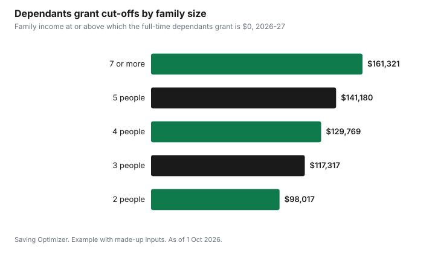

Education · Canada
Canada Student Grant for Students with Dependants: $280 a Month per Child
If you study full-time and have a child under 12, the Canada Student Grant for Full-Time Students with Dependants adds up to $280 per dependant for each month of study in 2026-27, on top of the regular full-time grant. Over an eight-month school year, that is up to $2,240 per child. You get the full amount if your family income is at or below the threshold, $54,412 for a family of two, and it phases out to zero at $98,017 for that family size. Part-time students with dependants have a separate grant of up to $2,688 for the year. You apply through your provincial student aid application and are assessed automatically.
Key takeaways
- Full-time: up to $280 per dependant per month for 2026-27, on top of the full-time grant.
- Part-time: up to $2,688 for the 2026-27 school year.
- Dependants: under 12 at the start of studies, or older with a permanent disability.
- Full amount at or below $54,412 for a family of two; none at $98,017 or more.
- Not available to students from the Northwest Territories, Nunavut or Quebec.
- Example with made-up inputs: a parent earning $70,000 gets about $1,439 for one child.
How much you can get
The Canada Gazette amendment SOR/2026-139, in force 1 August 2026, keeps the Canada Student Grant for Full-Time Students with Dependants at a maximum of $280 for each dependant for each month of study and sets the Canada Student Grant for Part-Time Students with Dependants at a maximum of $2,688 for 2026-27. Canada.ca says the full-time dependants grant is on top of your full-time student grant, and gives the yearly equivalent of up to $2,240 per dependant. The school year runs from 1 August to 31 July.
| Grant | Maximum | Basis |
|---|---|---|
| Full-Time Students with Dependants | $280 per dependant per month of study | Monthly, per dependant |
| Part-Time Students with Dependants | $2,688 | For the school year |
| Full-Time Students (regular grant, received as well) | $525 per month of study | Monthly |
Who counts as a dependant
Canada.ca says you need a dependant who is under 12 years old at the beginning of the study period, or over 12 with a permanent disability. Alberta Student Aid's 2026-27 description lists dependants under 12, dependants aged 12 to 18 with a permanent disability, and family members wholly dependent on the student as reported on the tax return, such as a disabled or elderly family member, and it asks for documentation of care for a dependant with a permanent disability. Family size counts you and the people in your family unit for the income table.
Income thresholds and cut-offs
The grant is based on family income from line 15000 of your 2025 tax return, or expected total income for 2026, according to Alberta. It pays the maximum at or below the first amount, decreases as income rises, and is cut off at or above the second amount.
| Family size | Maximum at or below | Cut off at or above |
|---|---|---|
| 2 | $54,412 | $98,017 |
| 3 | $66,641 | $117,317 |
| 4 | $76,952 | $129,769 |
| 5 | $86,033 | $141,180 |
| 6 | $94,245 | $151,937 |
| 7 or more | $101,797 | $161,321 |
How the grant phases out
The regulations set a monthly phase-out rate for each family size. Each dependant's $280 a month shrinks by that rate for every dollar of annual family income above the threshold; for a family of two, the rate of 0.006421282 means about 64 cents less per month for every $100 over $54,412, which takes the grant to zero at $98,017.
| Family size | Monthly rate | Monthly drop per $1,000 over |
|---|---|---|
| 2 | 0.006421282 | About $6.42 |
| 3 | 0.005525296 | About $5.53 |
| 4 | 0.005301324 | About $5.30 |
| 5 | 0.005077338 | About $5.08 |
| 6 | 0.004853366 | About $4.85 |
| 7 or more | 0.004703986 | About $4.70 |
Example with made-up inputs: a single parent
These numbers are an example with made-up inputs. A single parent with one child aged 6 studies full-time for 8 months. Family size is two and family income is $70,000, which is $15,588 above the $54,412 threshold. The monthly reduction is 15,588 × 0.006421282 = $100.09, so the dependants grant is $280 − $100.09 = $179.91 a month, or about $1,439 over 8 months. At a family income of $50,000, below the threshold, the parent would get the full $280 a month, or $2,240. The parent is also assessed for the regular full-time grant.
| Family income | Monthly grant | 8-month total |
|---|---|---|
| $50,000 | $280.00 | $2,240 |
| $70,000 | $179.91 | About $1,439 |
| $98,017 or more | $0 | $0 |

Child care and other costs
Provincial assessments often count child care. StudentAid BC says its part-time loan program does not cover living costs but allows child care up to funding maximums. Quebec's AFE counts children's living expenses, childcare and single-parent family expenses as allowable expenses, and treats a student who is a parent, or at least 20 weeks pregnant, as self-supporting, so parents' income is not counted. Quebec students use AFE instead of these federal grants; see Quebec AFE loans and bursaries.
| Program | Effect |
|---|---|
| Federal full-time dependants grant | Up to $280 per dependant per month |
| Federal part-time dependants grant | Up to $2,688 for the year |
| StudentAid BC part-time | Child care up to funding maximums |
| Quebec AFE | Childcare and children's living costs allowed; parent counts as self-supporting |
| Alberta Student Aid | Wholly dependent family members can count as dependants |
Who cannot get it
Canada.ca says the grant is not available to students from the Northwest Territories, Nunavut and Quebec, which have their own student aid programs. You also need to qualify for federal student aid and be in a qualified program at a designated institution. From 1 August 2026, Alberta notes, federal aid is no longer provided at private for-profit international institutions, apart from a legacy provision.
Steps
- List your dependants and their ages on the first day of your study period.
- Find your 2025 line 15000 family income and your family size.
- Check the threshold table to estimate the grant per dependant.
- Apply for full-time or part-time aid with your province; the grant is assessed automatically.
- Report child care costs where your province's application asks for them.
- Report changes, such as a new child, during the year.
For the regular full-time grant, see Canada Student Grant 2026-27; for part-time study, see the part-time grant; for school-age child care, see before- and after-school care costs.
Sources
- Canada Gazette Part II, SOR/2026-139, published 1 Jul 2026. 2026-27 maximums, thresholds and phase-out rates.
- Government of Canada, Canada Student Grant for Full-Time Students with Dependants, canada.ca (Wayback capture 15 Feb 2026), as of 1 Oct 2026. Eligibility, yearly equivalent and exclusions.
- Alberta Student Aid, Detailed information about annual loan limits and types of grants (2026-27), studentaid.alberta.ca, as of 1 Oct 2026. Dependant definitions and income cut-offs.
- StudentAid BC, Part-time funding, studentaidbc.ca, as of 1 Oct 2026. Child care in part-time aid.
- Gouvernement du Québec, Allowable expenses and Contribution of parents, sponsor or spouse, quebec.ca, as of 1 Oct 2026.
- Income and family details in the example are an example with made-up inputs.
Frequently asked questions
How much is the Canada Student Grant for students with dependants?
For full-time students, up to $280 per dependant per month of study in 2026-27, on top of the regular full-time grant. For part-time students, up to $2,688 for the year.
Who counts as a dependant for the grant?
Canada.ca says a dependant under 12 at the beginning of the study period, or over 12 with a permanent disability. Alberta also lists wholly dependent family members.
What income is too high for the dependants grant?
For full-time students, the grant is cut off at $98,017 of family income for a family of two, $117,317 for three and $129,769 for four, in 2026-27.
How much is the grant per year?
Canada.ca gives up to $2,240 per dependant per year, which is $280 a month over eight months of study.
Can Quebec students get this grant?
No. Canada.ca says it is not available to students from the Northwest Territories, Nunavut or Quebec. Quebec's AFE counts childcare in its own assessment.
Do I apply separately for the dependants grant?
No. You are assessed automatically when you apply for student aid with your province or territory.
Researched and drafted with AI assistance and fact-checked against official Canadian sources. How we create content.
Disclosure: Saving Optimizer may earn a commission if a partner link is added later, such as a banking offer type. No partnership is claimed on this page. Education only.